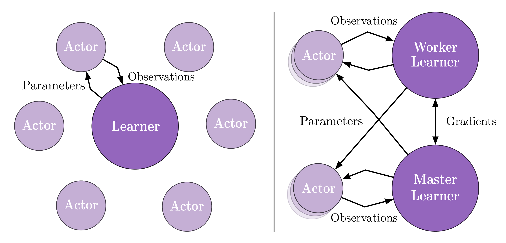

分布式强化学习¶
问题定义和研究动机¶
分布式强化学习（Distributed RL）是深度强化学习走向大规模应用，解决复杂决策空间和长期规划问题的必经之路。为了解决像星际争霸2（SC2） 1 和 DOTA2 2 这样超大规模的决策问题，单进程乃至单机器的算力是远远不够的，需要将整个训练管线中的各个部分拓展到各种各样的计算和存储设备上。研究者们希望设计一整套“算法+系统”的方案，能够让 DRL 训练程序便捷地运行在各种不同的计算尺度下，在保证算法优化收敛性的同时，尽可能地提升其中各个环节的效率。
一般来说，一个强化学习训练程序有三类核心模块，用于和环境交互产生数据的 Collector，其中包含环境本身（Env）和产生动作的 Actor，以及使用这些数据进行训练的 Learner，他们各自需要不同数量和类型的计算资源支持。而根据算法和环境类型的不同，又会有一些延伸的辅助模块，例如大部分 off-policy 算法都会需要数据队列（Replay Buffer）来存储训练数据，对于 model-based RL 相关的算法又会有学习环境 dynamics 的相关训练模块，而对于需要大量自我博弈（self-play）的算法，还需要一个中心化的 Coordinator 去控制协调各个组件（例如动态指定自己博弈的双方）。
在系统角度，需要让整个训练程序中的同类模块有足够的并行扩展性，例如可以根据需求增加进行交互的环境数量（消耗更多的CPU），或是增加训练端的吞吐量（通用需要使用更多的GPU），而对于不同的模块，又希望能够尽可能地让所有的模块可以异步执行，并减小模块时间各种通信方式的代价（网络通信，数据库，文件系统）。但总的来说，一个系统的效率优化的理论上限是——Learner 无等待持续高效训练，即在 Learner 一个训练迭代高效完成时，下一个训练迭代的数据已经准备好。
在算法角度，则是希望在保证算法收敛性的情况下，降低算法对数据产生吞吐量的要求（例如容忍更旧更 off-policy 的数据），提高数据探索效率和对于已收集数据的利用效率（例如修改数据采样方法，或是结合一些 RL 中 data-efficiency 相关的研究），从而为系统设计提供更大的空间和可能性。
综上所述，分布式强化学习是一个更加综合的研究子领域，需要深度强化学习算法 + 分布式系统设计的互相感知和协同。
研究方向¶
系统¶
整体架构¶
对于常见的决策问题，最常用的两种分布式架构就是 IMPALA 3 和 SEED RL 4
前者是经典的 Actor-Learner 模式，即数据收集和训练端完全分离，定期从 Learner 到 Actor 传递最新的神经网络模型，而 Actor 在收集到一定量的数据后（即 observations）发送给 Learner。如果有多个 Learner，他们还会定期同步神经网络的梯度（即分布式深度学习中的数据并行模式）。
{kind=link}
后者在前者的基础上，致力于去优化传输模型的损耗，SEED RL将用于推理产生动作的部分剥离出来，也和训练端放在一起，通过高效的 TPU 间通信技术来更新模型，从而大大减少了 IMPALA 中传递模型的代价，而对于环境和推理 Actor 之间的跨机器通信，SEED RL 使用优化过的gRPC方案来传递 observation 和 action，从而并不会有太大的负担。
Note
这两种方案并没有绝对的谁优谁劣，关键在于对于一个实际的决策问题，究竟是跨机器传输模型的代价更大，还是跨机器传输 observation 和 action 等数据的代价更大，如果是前者，且有比较好的 GPU/TPU 间通信组件，那么 SEED RL 是更好的解决方案，如果是后者，IMPALA是比较稳定的选择。还有，IMPALA 可以累积一批数据后进行数据传递，而 SEED RL 需要每个交互帧都存在数据传输，这属于经典的数据批处理和流处理对比问题，对于目前的机器学习社区前者一般会更简便易用。此外，如果整个训练程序需要更高的自由度和定制化，例如动态控制 Actor 的一些行为，IMPALA 会更为方便一些。
在上述两种架构之外，还有很多其他的分布式强化学习设计方案，例如引入异步神经网络更新方案的 A3C 5 和 Gossip A2C 6，为了支持大规模自我博弈，设计出复杂 League 机制的 AlphaStar 1，结合 model-based RL 和 MCTS 相关模块的 MuZero 7，这里就不一一叙述了，有兴趣的读者可以参考具体论文或是参考我们的 算法攻略合集部分。
单点效率优化¶
除了整体结构的设计和创新，还有很多对于整个训练程序中某一单点模块进行优化的方法，它们主要是针对某一个子问题，进行专门的定制优化，这里介绍一些主要的方法：
Object Storein Ray/RLLib 8: 对于多进程多机器之间的数据传递，Ray/RLLib中的 Object Store 提供了一种非常便捷高效的方式，任何一个进程，只要知道了这个对象的引用（即reference），就可以通过向 Store 请求获取相应的值，而具体内部的数据传输完全由 Store 进行管理，这样就可以像写本地单进程程序一样，实现一个分布式训练程序。Object Store 的具体实现是结合 redis，plasma和gRPC完成。Sample Factory9: Sample Factory 针对单台机器规模的 APPO 算法做了定制化优化，精心设计了一种环境和产生动作的策略之间的异步化方案，并利用 shared memory 大幅提高各模块之间的传输效率。Reverbin Acme 10: Reverb 提供了一套高灵活度和高效率的数据操作和管理模块，对于RL，很适合用来实现 replay buffer 相关组件。envpool11: envpool 是目前最快的环境向量化并行方案，利用 c++ threadpool 和许多经典 RL 环境的高效实现，提供了强大的异步向量化环境仿真能力。
算法¶
降低算法对数据产生吞吐量的要求¶
V-tracein IMPALA 3: off-policy 算法可以拓宽可供训练的数据范围，从而一定程度上提高算法对于旧数据的容忍程度，降低 Collector 端产生数据的吞吐压力，但是过于 off-policy 的数据很容易影响算法的收敛性，IMPALA 中针对这个问题，利用重要性采样机制和相应的裁剪手段，设计了分布式训练设置下一种较稳定的算法方案 V-trace，限制 off-policy 数据对优化本身的负面影响。ReuseandStalenessin OpenAI FIVE 2: 在 OpenAI 针对 DOTA2 设计的智能体中，他们进行了一些关于数据重用次数（Reuse）和折旧程度（Staleness）的实验，过高的重用次数和过旧的数据都会影响大规模训练中 PPO 算法的稳定性。
提高数据探索效率 + 对于已收集数据的利用效率¶
Data Priority and Diversity——Ape-x 12: Ape-x是一种经典的分布式强化学习方案，其中一个核心做法就是利用 Priority Experience Replay，为不同的数据设置不同的采样优先级，让算法更加关注那些“重要”的数据。此外，Ape-x还在不同的并行 Collector 中设置不同的探索参数（即eps greedy的epsilon）来提升数据多样性。Representation Learningin RL——CURL 13: 对于一些高维或多模态的输入，可以结合表示学习方法来提升 RL 的数据利用效率，例如对于高维图像输入的控制问题，CURL 引入额外的对比学习过程，RL 在学习到的特征空间上进行决策。而从系统设计来看，表征学习和强化学习训练结合也有很多优化空间，例如两者的异步。Model-based/MCTS RL——MuZero 7: MuZero将 model-based RL 和 MCTS RL结合在一起来提升整体的训练效率，其中包含诸多独有的模块，例如 MCTS 的搜索过程，数据在训练前的 reanalyze 过程等等，相应也会引出更为复杂和多样的分布式强化学习训练系统。
未来展望¶
目前，分布式强化学习还只是一个新兴的研究子领域，很多情况下会受限于算力和问题环境，仍然存在很多需要被解决的问题：
缺少统一的 benchmark 来评价分布式强化学习算法和系统的效率；
目前大部分分布式强化学习方案都只适用于一小部分环境和一部分 RL 算法，距离技术的通用化还有很远的路要走；
当前的系统优化和 RL 算法本身仍然是隔离的，可以考虑感知 RL 优化需求的系统设计，例如动态资源感知和调度
参考文献¶
- 1(1,2)
Oriol Vinyals, Igor Babuschkin, David Silver, et al. Grandmaster level in StarCraft II using multi-agent reinforcement learning. Nat. 575(7782): 350-354 (2019)
- 2(1,2)
Christopher Berner, Greg Brockman, et al. Dota 2 with Large Scale Deep Reinforcement Learning. CoRR abs/1912.06680 (2019)
- 3(1,2)
Lasse Espeholt, Hubert Soyer, Rémi Munos, et al. IMPALA. Scalable Distributed Deep-RL with Importance Weighted Actor-Learner Architectures. ICML 2018: 1406-1415
- 4
Lasse Espeholt, Raphaël Marinier, Piotr Stanczyk, Ke Wang, Marcin Michalski. SEED RL: Scalable and Efficient Deep-RL with Accelerated Central Inference. ICLR 2020
- 5
Volodymyr Mnih, Adrià Puigdomènech Badia, Mehdi Mirza, Alex Graves, Timothy P. Lillicrap, Tim Harley, David Silver, Koray Kavukcuoglu. Asynchronous Methods for Deep Reinforcement Learning. ICML 2016: 1928-1937
- 6
Mahmoud Assran, Joshua Romoff, Nicolas Ballas, Joelle Pineau, Mike Rabbat. Gossip-based Actor-Learner Architectures for Deep Reinforcement Learning. NeurIPS 2019: 13299-13309
- 7(1,2)
Julian Schrittwieser, Ioannis Antonoglou, Thomas Hubert, Karen Simonyan, Laurent Sifre, Simon Schmitt, Arthur Guez, Edward Lockhart, Demis Hassabis, Thore Graepel, Timothy P. Lillicrap, David Silver. Mastering Atari, Go, Chess and Shogi by Planning with a Learned Model. CoRR abs/1911.08265 (2019)
- 8
Eric Liang, Richard Liaw, Robert Nishihara, Philipp Moritz, Roy Fox, Joseph Gonzalez, Ken Goldberg, Ion Stoica. Ray RLLib: A Composable and Scalable Reinforcement Learning Library. CoRR abs/1712.09381 (2017)
- 9
Aleksei Petrenko, Zhehui Huang, Tushar Kumar, Gaurav S. Sukhatme, Vladlen Koltun. Sample Factory: Egocentric 3D Control from Pixels at 100000 FPS with Asynchronous Reinforcement Learning. ICML 2020: 7652-7662
- 10
Matt Hoffman, Bobak Shahriari, John Aslanides, Gabriel Barth-Maron, Feryal Behbahani, Tamara Norman, Abbas Abdolmaleki, Albin Cassirer, Fan Yang, Kate Baumli, Sarah Henderson, Alexander Novikov, Sergio Gómez Colmenarejo, Serkan Cabi, Çaglar Gülçehre, Tom Le Paine, Andrew Cowie, Ziyu Wang, Bilal Piot, Nando de Freitas. Acme: A Research Framework for Distributed Reinforcement Learning. CoRR abs/2006.00979 (2020)
- 11
Jiayi Weng and Min Lin and Zhongwen Xu and Shuicheng Yan. https://github.com/sail-sg/envpool
- 12
Dan Horgan, John Quan, David Budden, Gabriel Barth-Maron, Matteo Hessel, Hado van Hasselt, David Silver. Distributed Prioritized Experience Replay. ICLR (Poster) 2018
- 13
Michael Laskin, Aravind Srinivas, Pieter Abbeel: CURL: Contrastive Unsupervised Representations for Reinforcement Learning. ICML 2020: 5639-5650